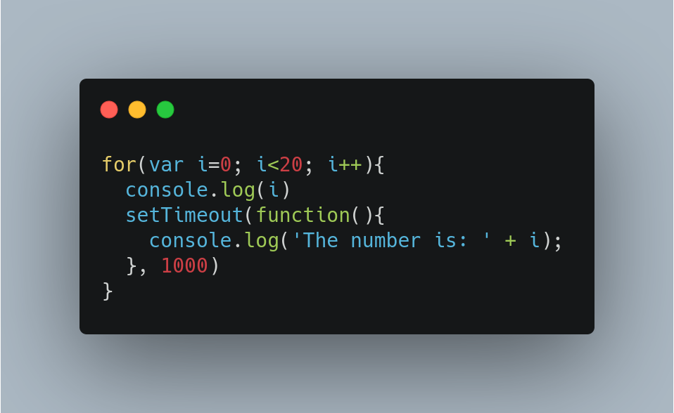

Here, in each iteration, value of i gets printed and the function
inside setTimeout function is being transferred to web api container
and from the web api container that anonymous function is shifted to
callback queue. For each iteration this process goes on, till the
value of i becomes 20. As for-loop execution gets over and call stack
becomes empty, now functions waiting inside the callback queue is
taken out one by one, put into call stack and executed, here every
function will be printing 20 because final value of i was 20.
This case is slightly different from the previous one. As we know,
‘let’ is a block-scoped declaration and it will create a new variable
binding for every iteration of the for loop. So in each iteration, a
new variable with the updated value is being created in the memory.
So, later on when functions are being executed after taking out of the
callback queue, they will be printing that value of i, to which it is
binded. So, here each function will be printing different value of i.